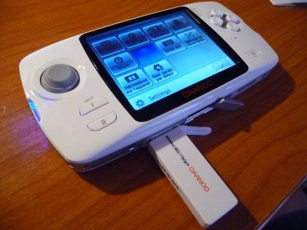
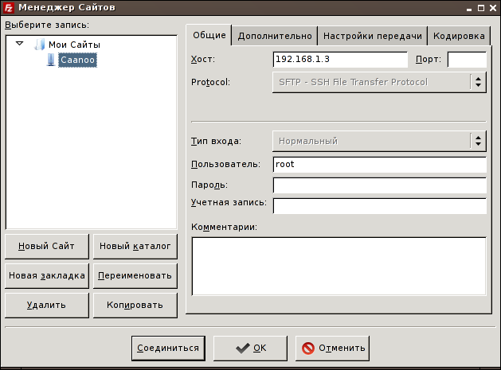
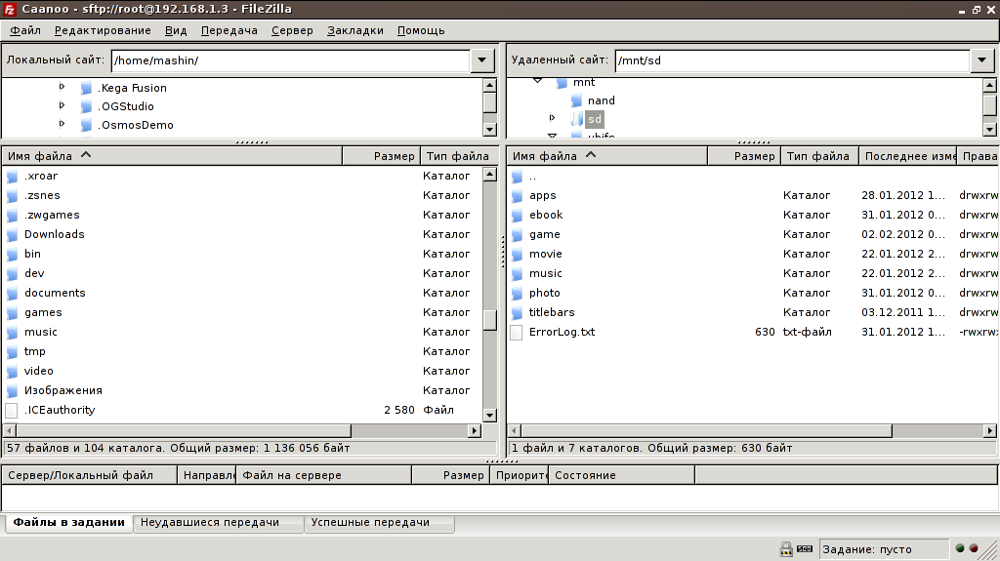

В этой заметке я опишу способ передачи файлов на Caanoo через Wi-Fi.

Для этого нам понадобятся:
- собственно консоль GPH Caanoo
- wifi-сеть, я использую домашний wifi-роутер, но в общественных сетях тоже должно работать
- wifi-адаптер для Caanoo
- ssh-сервер Dropbear (скачать можно здесь)
- любой SFTP-клиент (например Filezilla)
Для начала необходимо установить Dropbear, для этого просто разархивируем его в каталог apps на флешке консоли. Далее вставляем wifi-донгл в Caanoo, переходим в Настройки => Wireless LAN. Caanoo найдет вашу вайфай сеть и подключется к ней. Заходим в меню Apps и запускаем Dropbear (у него нет пользовательского интерфейса, так что после запуска вы снова окажетесь в меню).
Теперь нам нужно узнать ip-адрес Caanoo. Его можно посмотреть в веб-интерфейсе вашего wifi-роутера. Второй вариант это установить на Caanoo эмулятор терминала Termlua, в нем нужно выполнить команду ifconfig, в выводе которой будет 2 блока описания интерфейсов lo и ra0. В блоке ra0 есть строчка inet addr: 192.168.1.3 - это и есть ip-адрес консоли в сети.
Теперь устанавливаем на компьютер программу Filezilla. Открываем меню Файл => Менеджер сайтов, в поле хост прописываем ip-адрес консоли, выбираем протокол SFTP, в поле пользователь вводим root и жмем кнопку соединиться.

В правой панели filezilla вы увидите файлы на caanoo. Сохранять файлы нужно в директорию /mnt/sd/ - это корневой каталог нашей флешки. Наконец, что бы переслать файл на Caanoo, просто выбираем его в левой панели, щелкаем по нему правой кнопкой мыши и выбираем Закачать на сервер.
